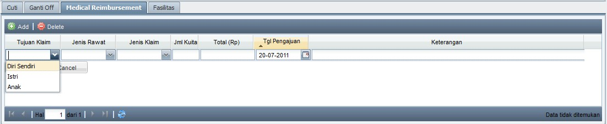
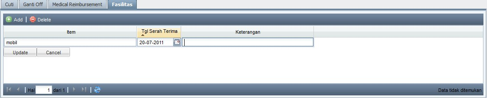

Ubah Status Appointment
Mengubah Status Appointment
- Untuk mengubah Status appointment, klik 2 kali pada Status appointment customer yang bersangkutan, pilih status yg sesuai.

Berikut penjelasan masing-masing Status:
- Reservasi : Status awal appointment (biasanya melalui telp)
- Konfirmasi : Pihak CRO wajib mengingatkan Customer jika sudah dekat harinya (H-1). Ubah status menjadi Konfirmasi jika Customer sudah diingatkan dan mengkonfirmasi OK.
(Jika setelah konfirmasi namun akhirnya customer tidak datang, maka biarkan saja status tersebut konfirmasi, tidak perlu diganti ke batal)
- Datang : Customer sudah tiba di klinik (segera ganti status menjadi datang sesaat setelah Customer tiba)
(note: tentukan terlebih dahulu Therapist / Dokter yang tepat)
- Batal : Jika Customer membatalkan appointment tanpa mengajukan penjadwalan ulang.
- Jadwal Ulang : Jika Customer membatalkan appointment dan mengajukan penjadwalan ulang.(ganti hari / jam appointment), atau dari Miracle yang berhalangan sehingga terpaksa membatalkan / menjadwal-ulangkan appointment tersebut
Note:
- Berikan status yg tepat untuk Customer, dengan pertimbangan jika tidak diberikan status yg tepat maka akan mempengaruhi kinerja dari divisi yg lain.
Contoh: Saat Customer sudah datang di klinik tetapi tidak diubah statusnya menjadi datang maka nama customer tersebut tidak akan muncul di modul MIS milik Suster atau Therapist.
- Jika status Customer sudah diganti datang, maka jam datang akan otomatis tersimpan di program dan akan nama Customer tersebut akan muncul di modul MIS milik Suster atau Therapist.

Copyright © 2010, IT Department of Miracle Aesthetic Clinic Group
Created with the Freeware Edition of HelpNDoc: Free PDF documentation generator